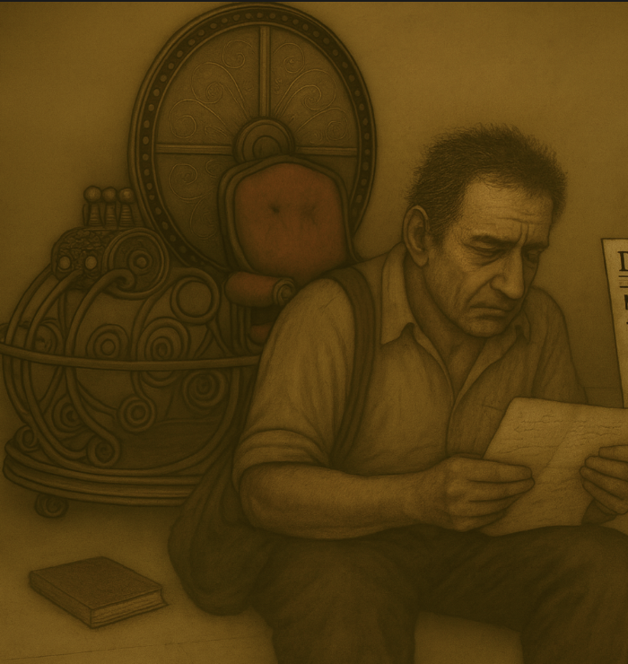
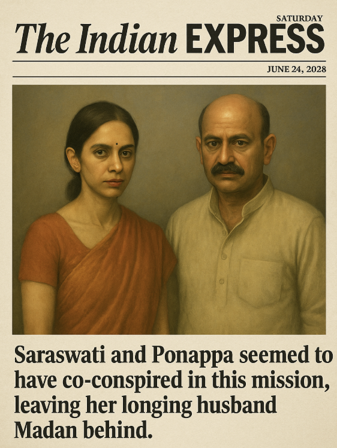

Madan's fingers shook as he unfolded the letter tucked into the diary. The paper was brittle, edges sharp as a knife. Avni's pistol remained steady, but her grip slackened as Madan began to read aloud.

"If the person reading this is Madan—hi. I am your future."
Avni's breath caught.
"I travelled back from 2034, using the eclipse's peak. And yes, I killed Saraswati."
The words landed like a gunshot in the silent room.
"Don't be angry at yourself yet. You will not have to go through what I went through for the rest of your years. Until 2014, you know what happened—we have been (you and I are the same until 2014 ;)) searching for Saraswati. I'll tell you what happened after now."
Madan read on, voice thin, his face slick with sweat.
"Saraswati was never to be found. I continued to work on the machine, trying to make it better, driven only by the hope that in 2034, during the next great eclipse, I would travel again and keep searching for her."
He paused only when another folded sheet slid from between the pages—a newspaper cutting.
"One fine morning, while I was cleaning our lawn—you know how we keep it dirty—Manju came cycling, tossed in the paper, and rode off. I picked it up, rolled it, and stuffed it in my pocket. But then—what did I see in the headlines? I pulled it back out, dropped the shovel in my hand. That headline changed everything. It still haunts me. Look at it yourself."
Heart thundering, Madan unfolded the clipping. His voice cracked as he read:
"Missing physicist Saraswati found in a secret lab built in an old bunker on the banks of the Godavari."
He turned the paper.
"Detectives claim she was working alongside Vijendra Ponappa for the last decade, selling time travel secrets to an 'unknown group of political giants'."
Madan gasped. More scraps fell loose—he flipped through them in desperation. Avni snatched one up and read its date: 24 June 2028. Her lips parted. "Did someone… come from the future?" she whispered.
Another piece carried a blunt footer:
"Saraswati and Ponappa seemed to have co-conspired in this mission, leaving her longing husband Madan behind."
A blurred photograph showed an older Saraswati with Ponappa, standing beside a polished replica of their machine.

Madan's eyes, wide and broken, pleaded with Avni's. She lowered her weapon, equally shaken.
Then, wiping sweat from his brow, he returned to the letter.
"I did not judge her at first. Maybe the headlines were lies. I ran—left everything—to the Crime Branch in Mumbai where she had been taken. After all the anticipation, I found a different Saraswati. From a distance she did not react, as if she expected me there. When we finally met, my voice stumbled. I asked how she was, where she had been, whether she was framed."
"She brushed away my questions. I kept talking, kept pleading. Finally, she broke her silence: 'Ask yourself, Madan.'"
"I asked, 'What?'"
"'Stop pretending,' she snapped. I pressed harder—pretending about what? Which year did you travel to? What was I doing? Did I do something wrong? She kept silent. Saraswati, please, talk. I pushed. I wish she had stayed silent. Instead she said: 'You really want to know? Fine. I time-travelled to 2014. And what—did you expect me to live with you? I wanted to become someone more significant.' And she looked straight at Ponappa."
Madan's voice dropped to a whisper as he read.
"I demanded why he was there, what she had to do with him. But before I could continue, an investigator pulled her away. I followed the case closely. Evidence piled up—records of the two of them spending a decade building on the time machine we once envisioned. She made fortunes with Ponappa while I… spent my years waiting just to see her again."
His throat clenched as he reached the next lines.
"When I got another chance to meet her, I asked only: 'Why?' She looked at me, arrogant. 'You want to know? When I came into 2014, the first thing that I did was read, read about the state of quantum physics in 2014. And I figured Ponappa was way far ahead. That shocked me. And you? You had done nothing. If I had travelled time, you could have achieved something with that by 2014 but you were nothing. I went to meet you—you weren't home. The machine was barely better. From far, I watched you walking, lonely and hopeless, like a lost scientist. That's when I decided: I don't want to be like you. You'd slow me down. I met Ponappa. We kept it a secret so the world does not know that there was a time traveller before we could make it big. I had all my youth, all my brilliance. I built the machine again, for real. I used to get news about you—and I was right. You turned out to be nothing. Stay away from me for good. I know how to get out of this.' She walked past me. Behind her, Ponappa smirked."
Madan's lips trembled as he read the last lines of the page.
"That broke me. For the next year, I did nothing but drink myself empty. Saraswati and Ponappa used their influence to escape quickly, to thrive—while I rotted in that room."
He turned the last page, face wet with tears.